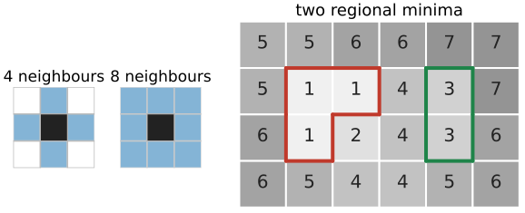
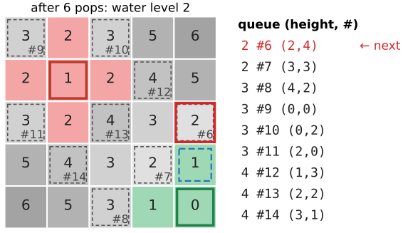
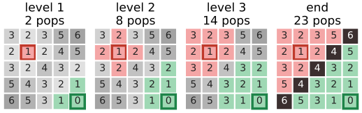
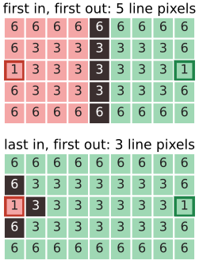
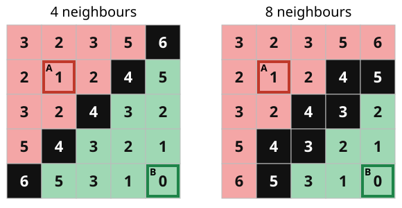
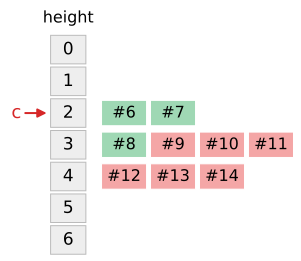

Last unit: flooding a landscape, in pictures. Now the algorithm that does it on a pixel grid, small enough to run by hand (Meyer, 1994).
Pixels, neighbours, plateaus, markers.
Priority-queue flooding: always flood the lowest pixel on the shoreline next.
Ties on plateaus: first in, first out puts the dam in the middle.
Two outputs: a one-pixel watershed line, or every pixel labelled; 4- vs 8-neighbours.
Cost: O(n \log n) with a heap, O(n) with one bucket per grey level.
Slides titled The math give the formulas and proofs; the ideas are complete without them.
From 1D to a pixel grid
Neighbours: 4 (up, left, right, down) or 8 (also the diagonals).
A plateau: a connected set of pixels with the same value. A regional minimum: a plateau whose neighbours are all higher. Finding them = connected components of plateaus (the labelling day), keeping those with no lower neighbour.
Markers: labelled seed pixels, by default one label per regional minimum. They may also be clicks, a threshold, or the h-minima (previous unit).
The flooding must decide, for every other pixel, which marker’s water reaches it first, or whether it is on a dam.

Left: the 4- and 8-neighbourhoods of a pixel (dark). Right: a grid of heights with two regional minima: a plateau of three 1s and a plateau of two 3s, each with only higher neighbours.
Meyer’s algorithm
Keep a priority queue of pixels, ordered by height f(p); among equal heights, first in, first out.
Every unlabelled neighbour of a marker enters the queue with priority f(p).
Pop the lowest pixel p.
If all labelled neighbours of p carry the same label, give p that label. If they carry different labels, p is on the watershed line.
Push the unlabelled neighbours of p that are not yet in the queue (a line pixel pushes nothing). Repeat until the queue is empty.
Each pixel enters the queue once and leaves it once. Neighbours are pushed in reading order (up, left, right, down); the arrival number #k records the order.

The exercise grid after 6 pops (water level 2): A (red) and B (green) with their markers framed; dashed = in the queue with arrival number #k. The next pop (red frame) is (2,4), height 2, #6; its only labelled neighbour (blue) is B, so it becomes B.
Example: the first pops
The 5 \times 5 grid of the exercise, markers A (height 1, row 1, column 1) and B (height 0, corner), 4 neighbours:
Height first, then arrival number: B’s two height-1 pixels go before A’s height-2 pixels, although A queued its pixels first.
Try it: step through the queue
Why this floods correctly
The queue always releases the lowest pixel on the shoreline. So the water rises evenly in all basins at once, exactly like the lake in the flooding picture.
A pixel lower than the current water level (an unmarked puddle reached over a pass) pops at once: the puddle is drowned by the marker that reached it.
A pixel is labelled only from a labelled neighbour, so every region is connected and contains exactly one marker.
A dam pixel appears where two different lakes touch the same pixel before it is flooded.

The exercise grid at the end of water levels 1, 2 and 3 and at the end: both basins grow at the same level; black = watershed line.
The math: flooding is a shortest-path search
Give a path from a marker to p the cost “its highest point” (excluding the marker), and let d(p) be the smallest such cost: the minimax (bottleneck) distance from the markers.
Meyer’s flooding is Dijkstra’s algorithm with \max in place of +: pushing p from q offers the path cost \max(d(q), f(p)). Popping by f(p) alone gives the same order, because a pixel with f(p) < current level pops before anything else.
Invariant: the water level \ell (the largest height popped so far) never decreases, and every popped pixel has d(p) = \ell at the moment it pops. So pixels are flooded in order of d, and each gets the label of a marker that achieves d(p) (ties: the order of arrival).
Graph view (the graph-cut day puts both methods on the same pixel graph): the labels form a minimum spanning forest rooted at the markers, with edge weights \max(f_p, f_q); the flooding is Prim’s algorithm grown from all markers at once.
Plateaus: why first in, first out
On a plateau all pixels have the same height, so the queue order alone decides who gets there first.
First in, first out: pixels are flooded in order of arrival, so each lake spreads over the plateau as a wavefront, one ring per step. Two lakes entering from opposite sides meet in the middle.
Last in, first out: the newest pixel goes first, so one lake runs across the plateau in a thin snake before the other moves. The dam ends up next to the other lake’s entry point.
1D: 0\,5\,5\,5\,5\,5\,0 with markers A, B at the ends. FIFO: A\,A\,A\,|\,B\,B\,B. LIFO: A\,|\,B\,B\,B\,B\,B.

The floodgrid preset “plateau between two markers” run to the end: FIFO puts the line (black) in the middle column; with LIFO, B’s water snakes across first and the line sits next to A.
Try it: a plateau between two markers
Two outputs, two neighbourhoods

The 5 \times 5 example with a watershed line (black): one pixel wide with 4 neighbours, thicker with 8.
Watershed line: line pixels belong to no region. Every pixel labelled: a would-be line pixel takes the label of the neighbour that queued it. Many libraries return the second by default; the boundaries are then between pixels.
With 4 neighbours a diagonal line of single pixels separates the regions (regions can only touch diagonally, which does not count). With 8 neighbours the regions must not touch even diagonally, so the line has to be 4-connected: here 7 line pixels instead of 5. Regions and line always use complementary connectivities (as object and background do on the labelling day).
The cost
Each of the n pixels is pushed once and popped once; each pixel looks at 4 or 8 neighbours.
Binary heap: push and pop cost O(\log n): total O(n \log n). For a 1024 \times 1024 image: about 2 \cdot 10^7 elementary steps (n \log_2 n, \log_2 n = 20).
Bucket queue for integer heights (8-bit: 256 buckets, one first-in-first-out list per grey level): push and pop in O(1), total O(n + 256): about 10^6 steps for the same image.
In practice: a 256 \times 256 image floods in a few milliseconds; the markers (h-minima) usually cost more than the flooding.

The queue of the exercise grid after 6 pops as a bucket queue: one first-in-first-out list per height (colour: the label that queued the pixel); pop = the front of the lowest non-empty list (c).
The math: why a bucket queue is linear
Bucket queue: an array of L FIFO lists, list v holds the queued pixels of height v, and a pointer c to the lowest non-empty list.
push(p): append to list f(p), set c \leftarrow \min(c, f(p)): O(1).
pop: while list c is empty, c \leftarrow c + 1; then take its first element.
c only moves down when a pixel below the water level is pushed, and that pixel is popped next; between such events c only moves up. Charging each downward move to its push, the total pointer movement is at most L plus the number of pushes: O(n + L) for the whole flooding.
FIFO inside each list gives exactly the “first in, first out among equal heights” order of the heap version, so both produce the same labels.
A second algorithm: sort, then flood level by level
Vincent and Soille (1991), the first fast watershed:
Sort all pixels by height (counting sort for 8-bit: linear).
Process the levels v = 0, 1, 2, \ldots: the pixels of height v next to an existing basin are flooded breadth-first (a FIFO queue) from the basins; pixels of height v that no basin reaches start new basins (new minima).
Same picture, different bookkeeping: Meyer floods from markers with one priority queue; Vincent–Soille discovers the minima on the way. Both are linear for integer images.
Try it: every minimum is a marker
Summary
Meyer’s flooding: a priority queue by height, first in, first out among ties; pop the lowest shoreline pixel, label it from its labelled neighbours (or make it a line pixel), push its unlabelled neighbours.
The water rises evenly; puddles without markers are drowned; every region is connected with one marker.
FIFO on plateaus puts the dam in the middle.
Output: a watershed line (1 pixel, of the complementary connectivity) or every pixel labelled.